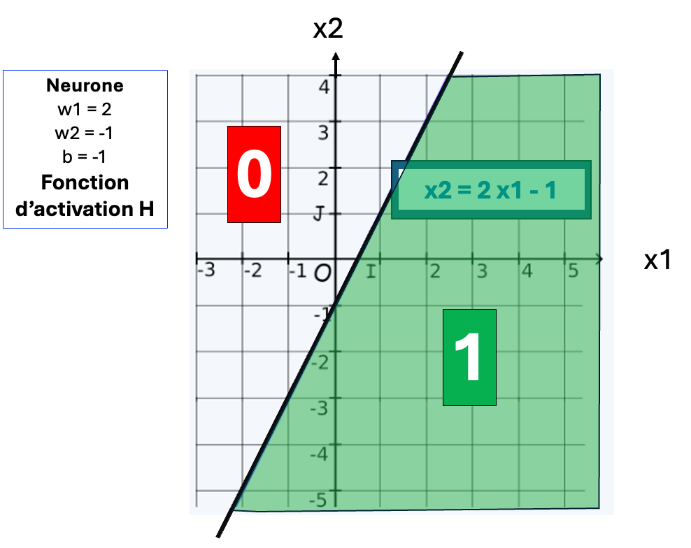
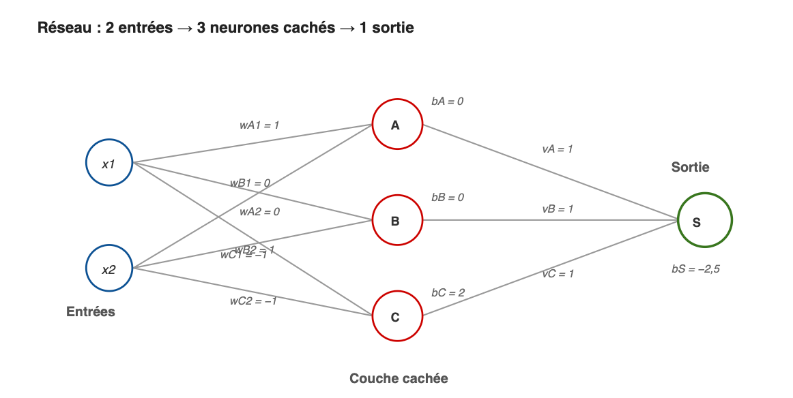
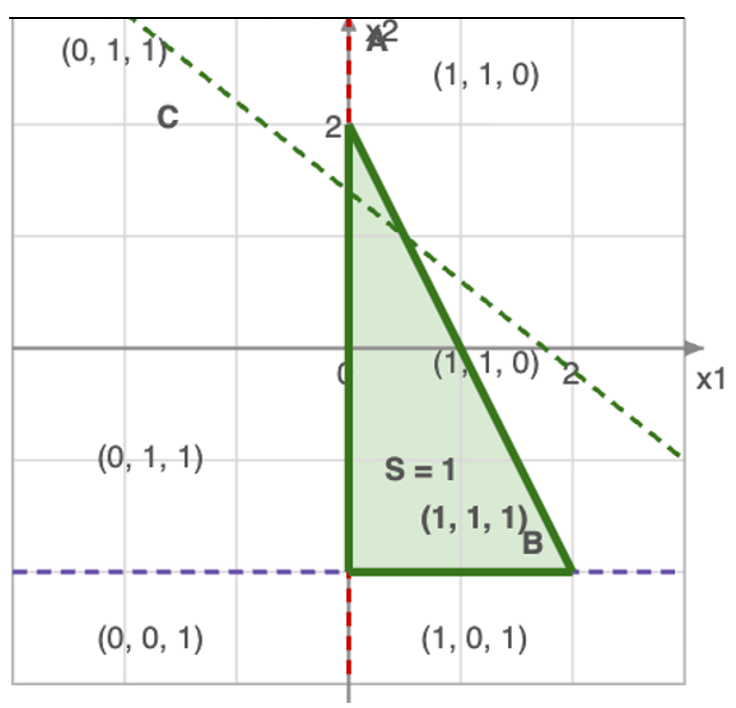

En combinant des couches de neurones, on pourra superposer et combiner
ces découpages.
Chaque couche intermédiaire ( dite
couche cachée) découpe l'espace en
régions de plus en plus fines.
Le découpage final épouse
ainsi les zones voulues quel que soit leur contour.
Le perceptron est le premier et le plus simple des
neurones artificiels, mais il est suffisant pour en illustrer le
fonctionnement.
La
fonction d'activation du
perceptron, nommée H du nom de son inventeur
(Heaviside), est basique et binaire:
- Si le score brut est supérieur ou égal à 0, son
score final est ramené à 1, sinon il est réduit à 0.


En combinant les résultats des trois droites A,B,C on peut délimiter des zones plus précises comme ici un triangle.
Seuls les (x1,x2) de cette zone seront reconnus comme étant de cette catégorie.

La fonction d'activation à seuil (H) ne dit plus si un point est
proche ou loin de la frontière de décision.
Faute de distance mesurable, on ne sait pas de combien
ajuster les poids, ce qui limite l'apprentissage.
Le perceptron (1957 et suivant) ne sait résoudre que des
problèmes linéairement séparables : toute frontière non droite
lui échappe.
Le constat de ces limites a asséché les financements :
c'est le début du premier hiver de l'IA.
Du perceptron d'origine, seul le nom a survécu : il désigne
aujourd'hui le réseau multicouche, et non plus le neurone
d'origine.
Le neurone de base, lui, a changé d'activation : les fonctions
continues (sigmoïde et autres...) indiquent à quel point le
point est proche ou loin de la frontière, et rendent l'erreur
différentiable.
Grâce à cette continuité, l'algorithme de
rétropropagation (popularisé en 1986) sait enfin
entraîner les couches cachées : le réseau découpe l'espace avec
des frontières quelconques, et non plus un simple hyperplan.